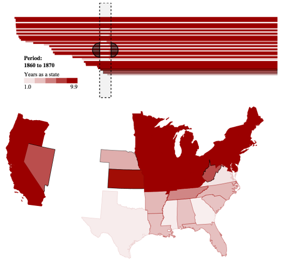

From the original site
This archived piece preserves its original text and historical context.
Topotime
After building Kindred Britain, Karl Grossner and I became more engrossed in the representation of temporal phenomenon. While we have these sophisticated methods for representing networks and geography, we only have the most primitive methods for representing time.
Topotime was created as a data model for representing events. It handles cyclical events and unsure events and differentiates between events that occurred for an uncertain period from events that occurred for a known duration during an uncertain period. It also included a D3 layout for rendering that data model.

What went right
The layout works and I used it to create a few different examples. The data model has great breadth.
What went wrong
Under the hood, the layout looks terrible. I'd only just started writing layouts when I wrote that one.
The next version would have
Topotime is still in active development, though I haven't contributed to it in some time. I think a very good timeline layout (or timeline chart) would be tremendously useful.